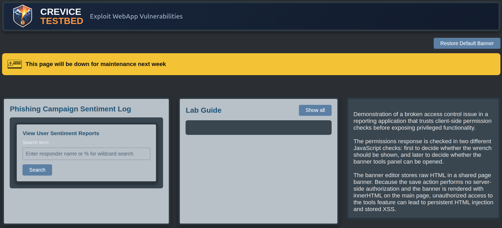
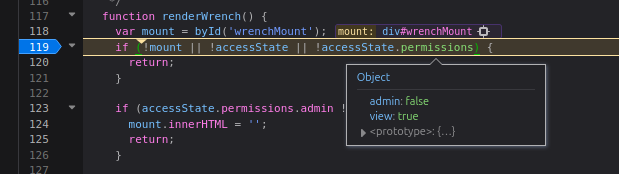
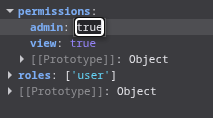
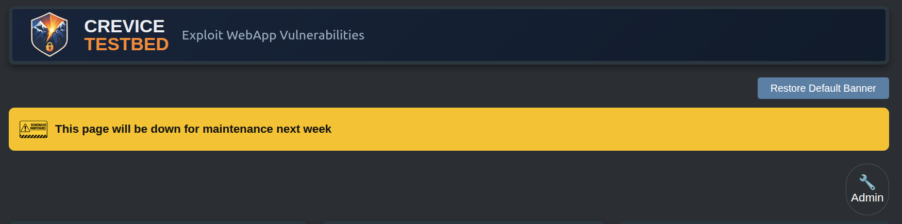
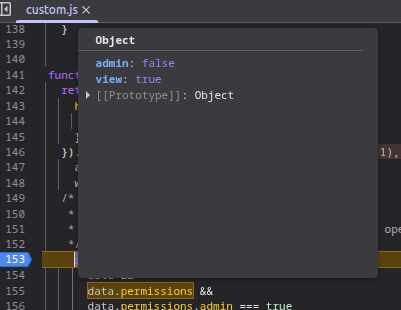
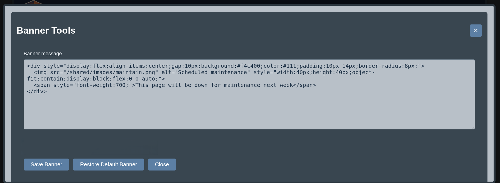
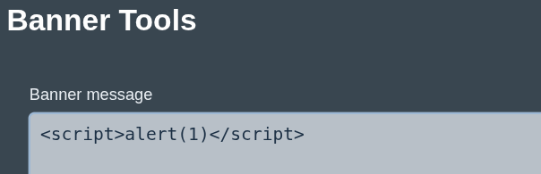
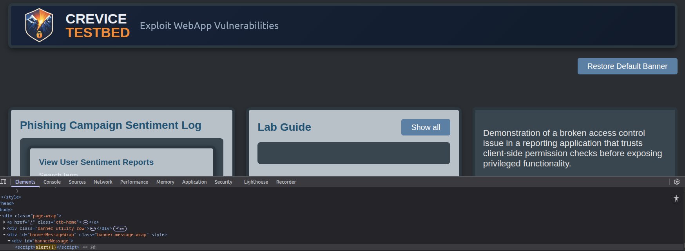
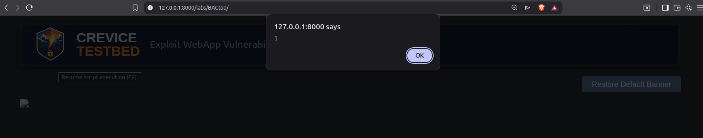
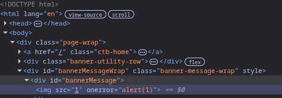

Broken Access Control Too Client-Side Authorization Checks and Missing Server-Side Enforcement

Summary
This is based on a recreation of a broken access control flaw caused by client-side authorization checks with no meaningful server-side enforcement that I discovered during an assessment. The application displays a maintenance banner to all users and includes a hidden administrative interface that allows the banner to be edited. That feature is supposed to be limited to administrators, but the application makes its authorization decisions in JavaScript based on a privilege response the user can tamper with.
The same privilege check is performed twice, and a user can tamper with the response to reveal administrative functionality that allows saving user-controlled data and ultimately rendering it into a raw HTML sink on the main application page.
When web applications rely heavily on client-side scripting for page rendering, server-side checks are still essential.
The Vulnerable Behavior
The application makes two separate privilege checks against an API and receives the same response both times:
{"admin":"false", "view":"true"}
The first response is used by renderWrench() to decide whether the admin wrench icon
should be shown. The second is used by openBannerPanel() to decide whether the
administrative editing interface should actually open.
That means the application is doing two things wrong:
- it hides privileged functionality with client-side logic
- it exposes privileged functionality with client-side logic
Neither of those is enforcement.
A user can tamper with the response in transit or at runtime and cause the application to believe they’re an administrator. Once that happens, the banner editing feature becomes accessible.
It’s worth drawing a clean distinction here: rendering or hiding admin UI in client-side code is a presentation decision, not an authorization decision. Preventing unauthorized users from seeing privileged controls is a good idea, but it isn’t the security boundary. The real boundary is whether unauthorized requests that produce state changes are accepted or rejected. If the application lets an unauthorized user submit a banner update successfully, the vulnerability exists whether the interface was visible or not.
If anything, hiding the panel without enforcing the action just turns the feature into a slightly more annoying treasure hunt. Security through obscurity isn’t security.
The banner content is then rendered through a raw HTML sink:
banner.innerHTML = html;The application isn’t inserting text. It’s telling the browser to parse supplied content as HTML and place the result into the DOM. That creates a much more dangerous rendering model than simple text output.
There’s also a useful nuance here. Someone testing the sink may try injecting a
<script> tag and notice that it appears in the DOM without executing. That’s
deliberate. One reason I built the lab this way was to reflect a real browser behavior that trips
people up and to make them stop and think about the sink instead of assuming that rendered script
markup automatically means execution.
My goal here wasn’t to create a generic “paste payload, get alert box” exercise. It was to combine two vulnerability patterns I care about and show the real risk of unsafe admin functionality being injected into a raw HTML sink. I sincerely want development teams and organizations to rethink these design choices.
In other words, a properly rendered <script> tag may still fail to run in this
insertion path. That doesn’t make the sink safe. It just means exploitation requires thought
instead of muscle memory. The browser isn’t being generous here. It’s being specific and honoring the HTML5 parsing behavior for innerHTML.
Exploitation
There are two straightforward ways to exploit the access control weakness in this lab.
Browser debugger method
A tester can open the debugger in their browser's developer tools, set breakpoints around the two privilege checks, and reload the page. When the application processes the API response, the tester can modify the returned value from false to true.



Because the application checks privileges twice, the tester has to tamper with both decision points: once to force the wrench icon to render, and again to force the admin panel to open.

Intercepting proxy method
A tester can also use an intercepting proxy such as Burp Suite to modify the API response before it reaches the browser. A simple match-and-replace rule that changes "false" to "true" is enough to satisfy both checks consistently.
The application isn’t asking the server whether the current user is allowed to perform an administrative action at the moment the action is requested. It’s asking the browser to remember what it was told earlier and behave honestly.
Browsers have many good qualities. Reliable access control enforcement isn’t one of them.

The Banner Sink
Once the panel is exposed, the attacker can update the banner content with arbitrary HTML.

That
creates the obvious question: if the banner accepts HTML and is rendered within the DOM
, why wouldn’t a simple injected <script> tag execute?

Because browser behavior is more nuanced than “script tag present, therefore code execution.”
When HTML is inserted via innerHTML, an injected script element may be parsed and
added to the DOM without executing as expected. This
forces the tester to understand the sink rather than treating every HTML injection as
interchangeable.
An analyst, learner, or researcher who sees a <script> tag rendered but not
executed has to stop and ask the right question: not just “is this vulnerable,” but “how does this
particular sink behave?”
Importantly, the sink remains dangerous despite the failure. Unsafe HTML rendering always creates risk. It can enable markup injection, UI redressing, malicious links, deceptive prompts à la ClickFix, or alternative execution strategies depending on how the content is used and what the browser allows in that context.
In these cases an image element can be used in place of a script element.


Impact
The immediate impact is unauthorized access to administrative functionality. An attacker who shouldn’t be able to modify the maintenance banner can do exactly that by bypassing the client-side checks.
The broader impact depends on how the banner is used and what payloads are possible in the rendering context. At minimum, the attacker gains control over trusted application content shown to other users. That opens the door to defacement, phishing content, deceptive messaging, malicious links, interface manipulation, clickjacking-style user influence, drive-by download lures, and ClickFix-style social engineering prompts delivered from a trusted application surface.
In some cases, that kind of in-application deception may be more realistic and more dangerous than a basic script payload. Users tend to trust messages that appear to come from inside the application they’re already using, especially when the content appears in an official-looking banner or notification area.
Even where full JavaScript execution is constrained, the security issue remains serious. An untrusted user is being allowed to modify privileged content in a trusted part of the application, and that content is being rendered as HTML rather than handled safely as data.
That’s enough to treat the feature as high risk.
Defensive Lessons
There are two necessary fixes here, and they address different parts of the problem.
1. Enforce authorization on the server
Administrative functionality has to be protected by server-side access control checks. The browser can decide whether to show a button for usability reasons, but it can’t be trusted to decide whether the underlying action is permitted.
At minimum, if a user submits a banner update, the server should independently verify that the user is authorized before accepting the request or changing application state.
2. Stop trusting raw HTML
If the feature truly needs to support markup formatting, the input should be sanitized prior to storage or rendering so dangerous markup and attributes are removed. “Only admins can use it” isn’t a substitute for safe handling.
A safer design would avoid raw HTML entirely and use constrained templates instead. Let the user supply text, an image, a link, maybe a small set of approved styles. Then let the application render those values safely within a predefined structure.
That still supports branding and notifications. It just does so without turning the banner editor into an unmanaged publishing surface inside the application.
And in most cases, that’s what the feature needed to be all along.
Lessons for Security Analysts and Researchers
The main lesson here is that hidden functionality deserves the same scrutiny as visible functionality, and client-side checks should never be mistaken for real enforcement.
- If access control lives in JavaScript, assume it can be bypassed.
- If a privileged feature accepts raw HTML, treat it as dangerous even when it’s framed as admin-only.
- If an obvious payload fails, don’t stop there. Understand the sink.
- If the application trusts the browser to protect a sensitive feature, there’s usually more to investigate.
This lab also highlights something worth remembering during testing: sometimes the most useful findings aren’t about obscure payloads. Sometimes they’re about noticing that the application is trusting the wrong component to do the wrong job.
Related Research and Tooling
This pattern also influenced some of my extension work in BurpSuite. Because client-side authorization logic keeps showing up during testing, I wrote a Burp Suite Access Control BCheck to help prioritize JavaScript files that may contain access control or authorization-related functionality for manual review. It’s a lightweight triage aid rather than a vulnerability detector, but it has been useful for surfacing custom client-side code that may be worth closer inspection.
Closing Thoughts
This lab was built to highlight two security problems that are each dangerous on their own and especially uncomfortable when they intersect.
The first is broken access control implemented through client-side checks. The second is a class of unsafe admin-only HTML functionality I’ve repeatedly encountered in real products: banner editors, announcement panels, branding tools, and similar features that accept raw HTML because someone wanted formatting flexibility and decided that “admin-only” was close enough to a security model.
It isn’t.
This kind of administrative functionality irks me because I see it often, and the reasoning behind it is usually the same. A team wants flexible messaging, branding, or notification content. They add an admin-only editor. They allow raw HTML because the business wants rich formatting. They sanitize nothing at all because they assume the interface is only available to trusted users. The admin role itself becomes the only security control standing between the application and dangerous content injection.
This lab puts those issues together to show the real risk of trusting both the browser and privileged users more than the design deserves. This is an access control issue first. The primary vulnerability is that the application trusts the client to make authorization decisions about a privileged feature and fails to enforce server-side controls. The unsafe banner functionality is there to show why that failure matters so much, and why this kind of feature is a poor design choice even before access control breaks down.
This effectively allows limited development outside the DevSecOps pipeline. Any user who can access the banner editor can introduce active content into the application without code review, security validation, or deployment controls.
Even when broken access control isn’t present, the feature is risky. Organizations don’t know whether their implementation will be the one that later gets paired with an access control weakness, a privilege escalation issue, an authorization bypass elsewhere in the application, or a malicious insider with legitimate access. The fact that those failures don’t always appear together doesn’t make the unsafe HTML feature acceptable. It just means the full consequences haven't been experienced yet.
This is also why “intended functionality” isn’t a satisfying response when these features are reported. Supporting formatted banners may be intended. Supporting arbitrary dangerous HTML and trusting that no access control problem, insider threat, or future design mistake will ever expose it is something else.
That’s a poor foundation for a trusted application feature.
You may be wondering about the “Too”.
Yes, the title knows what it’s doing.